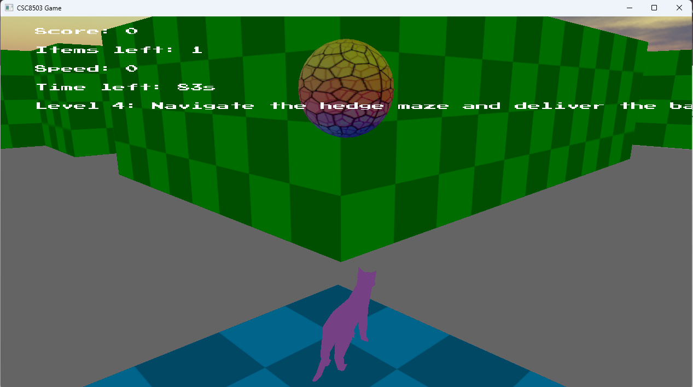
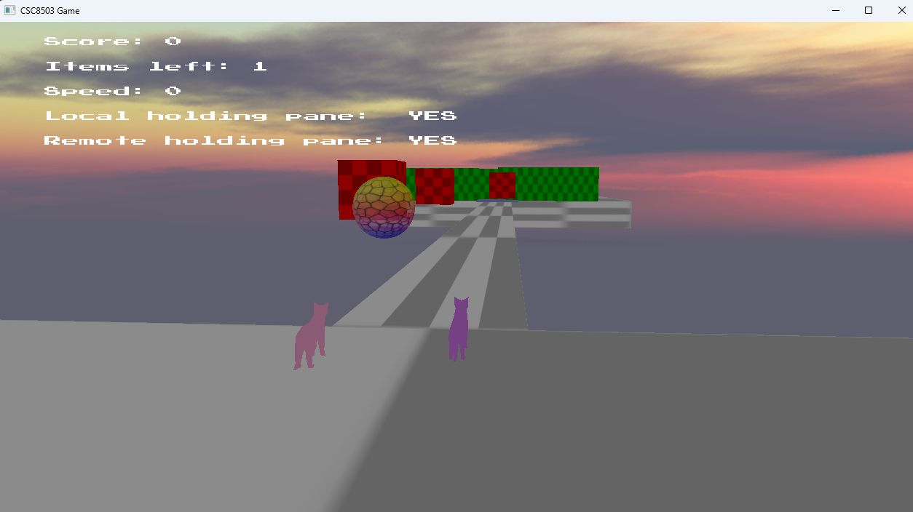
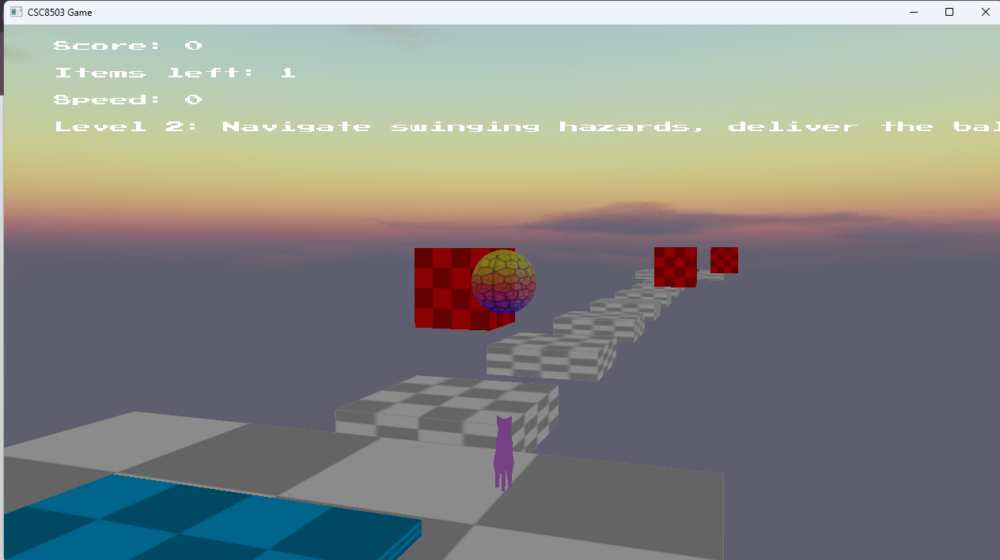

No Pane No Game
A real-time game technologies project built around physics-driven courier gameplay, fragile-object delivery, enemy AI, and a networked co-op expansion.

Overview
No Pane No Game is a courier-focused game project built from the module codebase for CSC8503. The central gameplay loop revolves around transporting fragile objects through hazard-filled spaces without dropping or breaking them, while navigating platforming challenges, enemy AI, timers, and environmental obstacles.
My Role
I designed and implemented the game systems, level flow, AI encounters, networking features, and user-facing structure. The project focused on demonstrating the core module pillars: collision and physics systems, AI behavior, raycasting-supported logic, and multiplayer networking.
Core Systems
- Physics-Based Courier Gameplay: The player transports a fragile ball or pane through levels built around movement, timing, and safe delivery.
- Collision & Resolution: The project uses the main collision detection types required by the module along with impulse-based collision resolution.
- AI Behaviors: Patrol and chase logic drive several enemy encounters, with raycasting used to support additional gameplay behavior.
- Menus & Level Flow: The game includes level selection, replay flow, and user-facing menu support across the experience.
- Networking: The multiplayer mode includes shared-object carrying, gameplay packet structures, and a server-maintained high-score system.
Singleplayer Progression
The singleplayer campaign is structured as a sequence of distinct challenge levels. The tutorial introduces movement, jumping, and fragile-ball interaction through a wobbling bridge and delivery zone. Later levels build into floating platform traversal, pendulum timing hazards, a kitchen encounter with a patrolling human AI, a timed maze, and a final goose-driven chase space. :contentReference[oaicite:1]{index=1}
- Tutorial: Basic controls, bridge crossing, ball pickup, and delivery.
- Level 1: Straightforward platforming and safe return delivery.
- Level 2: Swinging red pendulums introduce timing pressure.
- Level 3: A kitchen-themed space where a patrolling human AI chases the player if the ball is taken.
- Level 4: A narrow maze with a time limit.
- Level 5: An aggressive goose AI that patrols and chases through corridors.
Multiplayer Expansion
The multiplayer component expands the design into a cooperative “Borosilicate Buddies” mode, where two players must carry a shared fragile pane together. The pane respawns if dropped or broken, and the environment introduces new co-op-specific hazards and checkpoint-based progression. The later stages include a hedge maze patrolled by a BFS pathfinding enemy and a final shooter arena with turret fire and cover-based movement. :contentReference[oaicite:2]{index=2}
- Stage 1: Shared carrying in a starting arena.
- Stage 2: Narrow bridge traversal through a pendulum gauntlet.
- Stage 3: Hedge maze with a BFS-driven “security dog” chasing players or the dropped pane.
- Stage 4: Final shooter arena with turret bursts, reload windows, and cover use.
Technical Highlights
The strongest technical areas in the project are the integration of gameplay networking, packet-driven multiplayer interactions, and the broad demonstration of the module’s required systems. The feedback especially highlighted the menu flow, high-score networking, and structured packet use as strengths, while also noting that the project would have benefited from broader collision support such as OBB/sphere combinations, plus more advanced restitution and friction logic.
Design Challenges
The design challenge was not just creating obstacles, but making them interact meaningfully with a fragile-object delivery loop. Hazards like pendulums, patrol enemies, chasers, mazes, and projectile threats all needed to support the same core tension: maintaining control of the carried object while reading the space quickly and reacting under pressure.
Controls
- WASD: Move
- Space: Jump
- Scroll Wheel: Zoom in / Zoom out
- E: Pick up / drop object
- P: Pause
- R: Reset world and camera
Outcome
No Pane No Game demonstrates a solid application of real-time gameplay programming concepts across physics, collision response, AI logic, raycasting, UI flow, and multiplayer expansion. It works especially well as a systems-driven coursework project because each part of the design is built to exercise a different technical pillar while still serving a coherent gameplay premise.
Gameplay & Level Design


No Pane No Game explores physics-driven traversal and delivery challenges across increasingly complex level layouts. The project focuses on movement clarity, hazard readability, and maintaining player control under dynamic environmental constraints.